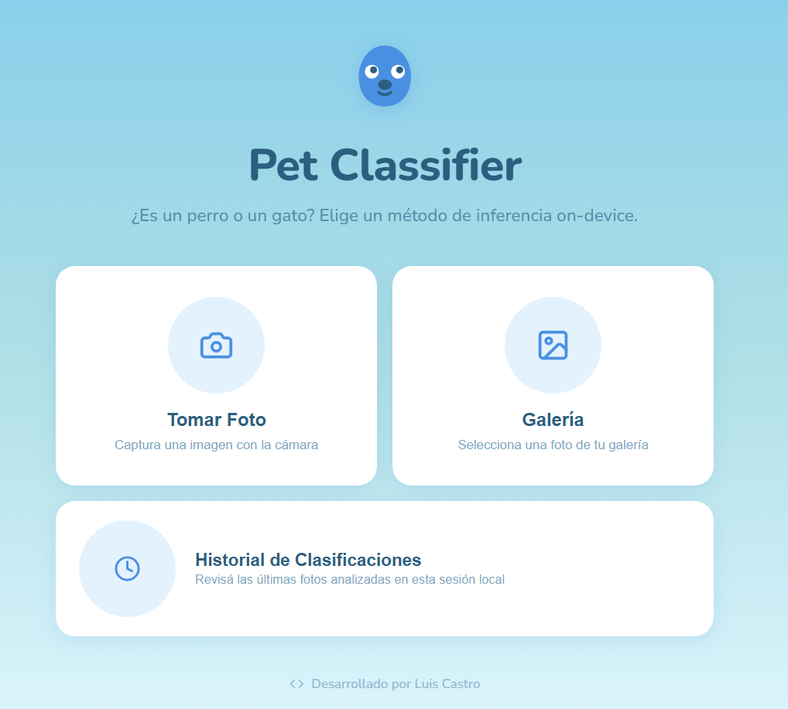
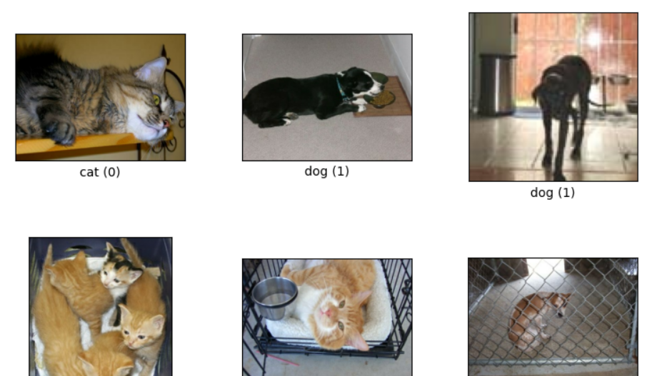
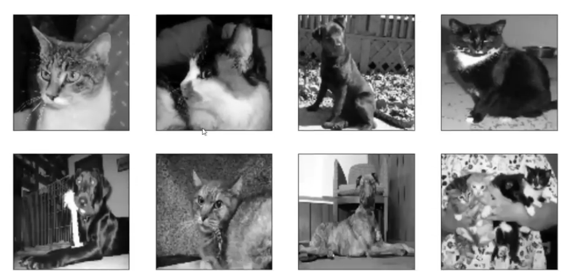
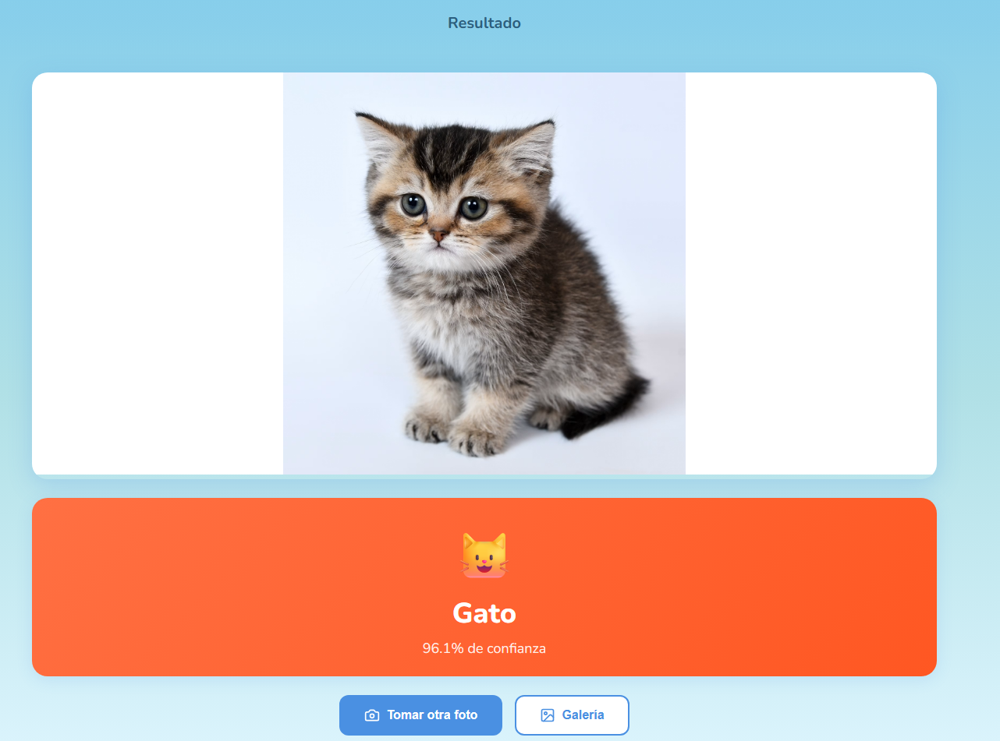
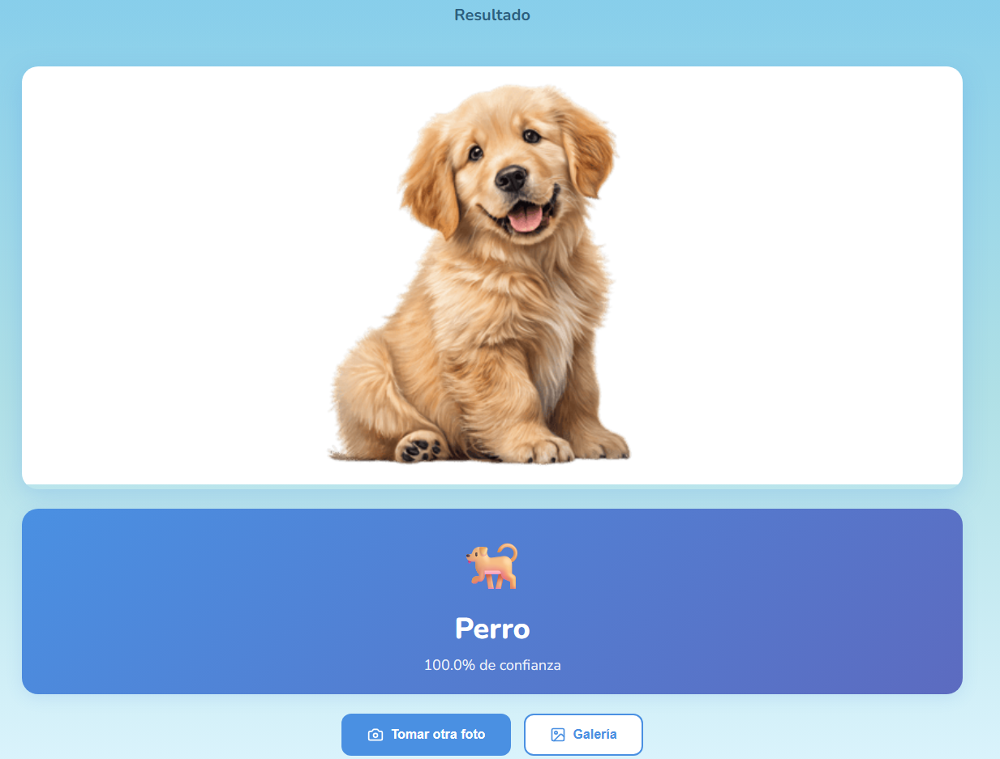
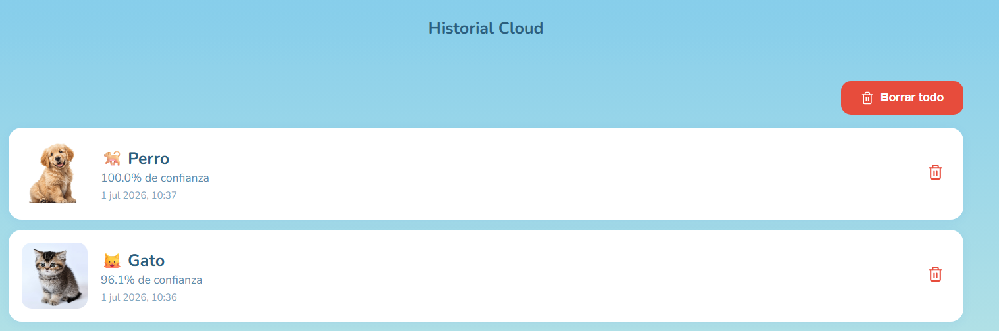

Clasificación Eficiente de Mascotas
Este desarrollo nació originalmente como parte de las prácticas del Curso de Inteligencia Artificial en Domestika. La premisa central del proyecto fue diseñar, entrenar y desplegar un modelo capaz de distinguir entre perros y gatos realizando todo el proceso de inferencia de forma local (on-device) directo en el navegador utilizando TensorFlow.js.
La interfaz web fue diseñada meticulosamente para ofrecer una experiencia limpia e intuitiva, permitiendo al usuario cargar imágenes desde su galería, capturar fotos en tiempo real con la cámara o consultar el historial persistente de análisis local.

UI Principal
Manipulación y Optimización del Dataset
El entrenamiento de modelos destinados al navegador requiere un balance crítico entre precisión matemática y peso del binario final.
1. Dataset Original (TFDS)
Utilizando tensorflow_datasets se mapearon las muestras iniciales a color. Las imágenes del conjunto de datos original poseían dimensiones sumamente heterogéneas y tres canales de color (RGB).

Inspección con show_examples
2. Redimensión y Escala de Grises
Estrategia de Optimización: El color no añade características discriminativas determinantes para diferenciar la morfología de un perro y un gato en este escenario. Por ello, las imágenes se transformaron a blanco y negro (escala de grises) y se redimensionaron de forma estricta.

Inputs Preprocesados
Métricas y Comportamiento del Modelo
Casos reales de predicción e historial persistente corriendo mediante la API local de JavaScript.

Gato clasificado correctamente

Perro clasificado correctamente
📂 Persistencia de Datos Local
La aplicación incorpora un módulo de **Historial Local** que almacena de forma estructurada las últimas clasificaciones de la sesión. Esto permite auditar las predicciones pasadas, comparar porcentajes de confianza y mantener la persistencia sin consumir recursos de servidores externos.

Panel panorámico del Historial Cloud / Local